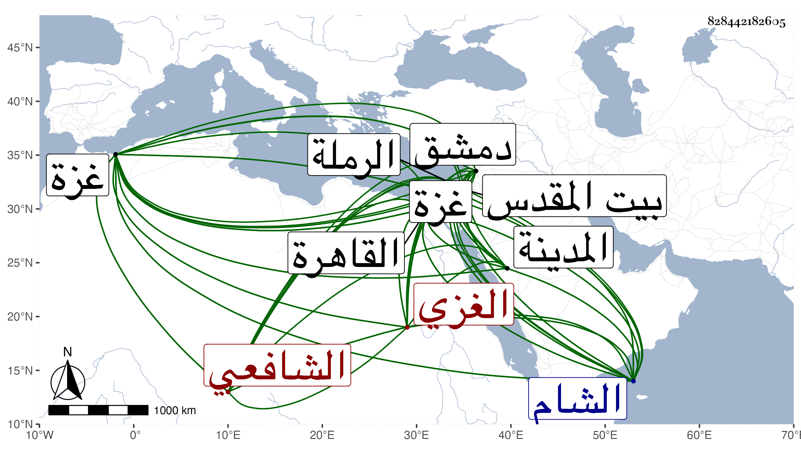

0902Sakhawi.DawLamic.ITO20230111-ara1.EIS1600.828442182605
Biography ID: 828442182605
709
عبد القادر بن شعبان بن علي بن شعبان الغزي الشافعي شقيق أحمد ومحمد وأصغر الثلاثة ويعرف بابن شعبان . ولد تقريبا في سنة إحدى وسبعين وثمانمائة بغزة ونشأ بها فحفظ الحاوي وجمع الجوامع وألفية الحديث والنحو وعرض على جماعة من أهل بلده ودمشق وبيت المقدس والقاهرة كالبرهان الأنصاري والبقاعي وكاتبه وأخذ عن العبادي والجوجري والبكري والحصنيين والكافياجي وغيرهم في الفقه وغيره وانتفع بأخيه في العربية والاصلين وأخذ بالشام عن المحب البصروي في العروض وغيره وولي قضاء الرملة بعد صرف الشهاب ابن يونس النابلسي فدام قليلا وأم بفيروز الشام مدة واستقر في قراءة مصحف بمدرسة الأشرف قايتباي بغزة وحج في سنة ثمان وتسعين وجاور التي تليها واختص بالعفيف عبد الله بن أبي الفضل بن ظهيرة والزيني عبد الباسط وكثر اجتماعه بي وحضوره مع الجماعة بل كان قرأ علي في سنة تسع وثمانين بالقاهرة دروسا في التقريب وتعانى نظم الشعر ومدح به غير واحد ومنه في الحريق الكائن بالمدينة النبوية :
| لم يحترق حرم النبي لفاحش | يخشى عليه ولا دهاه العار |
| لكنما أيدي الروافض صافحت | ذاك الجدار فطهرته النار |
